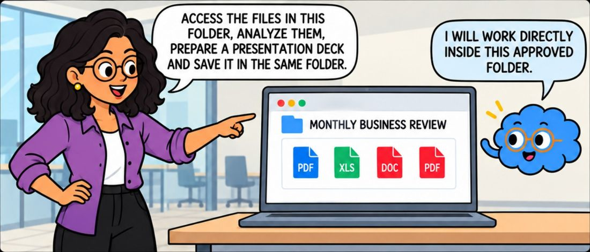
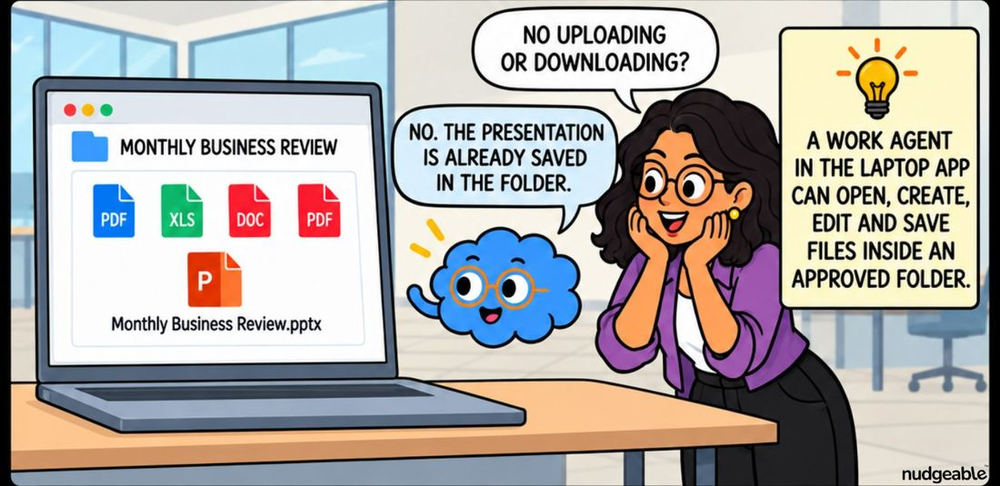
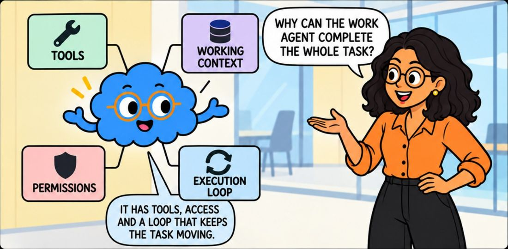
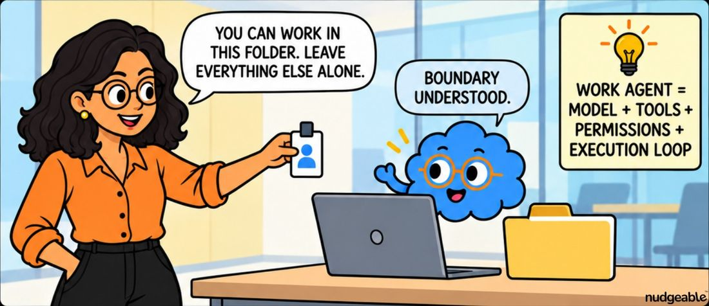
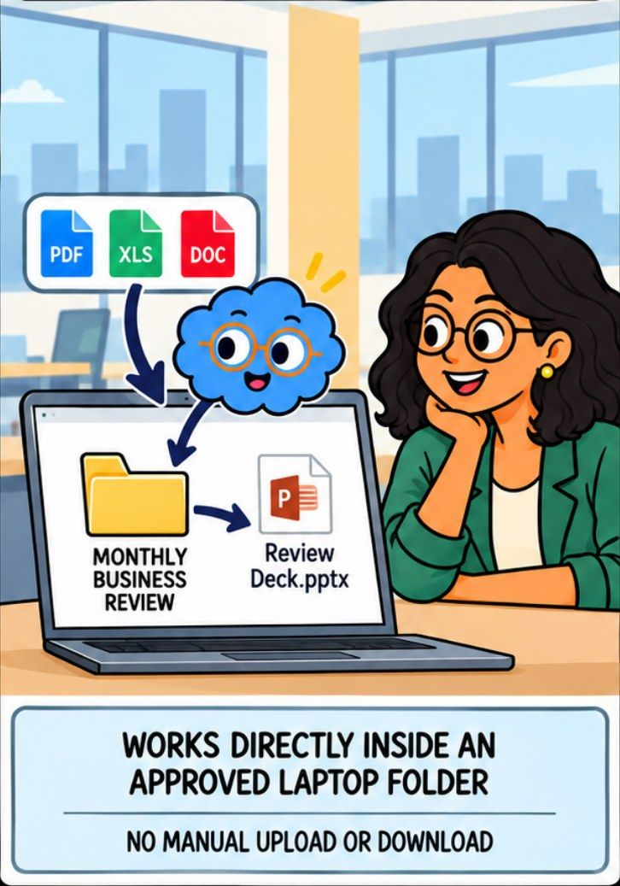
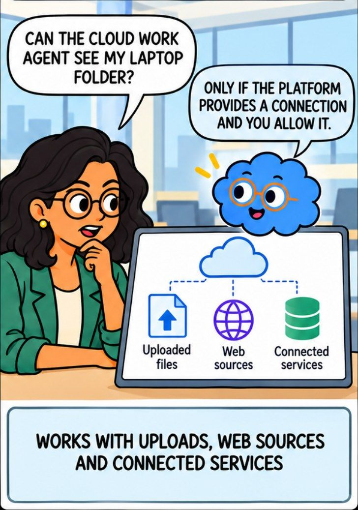
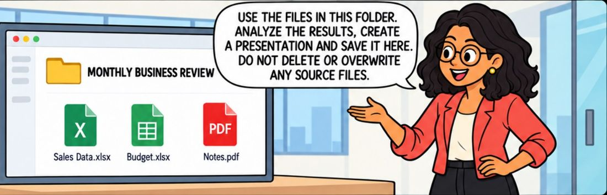
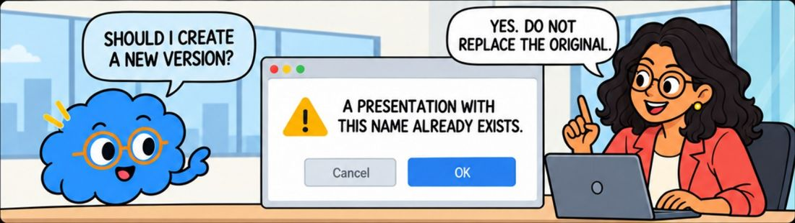
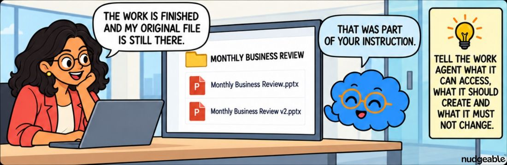
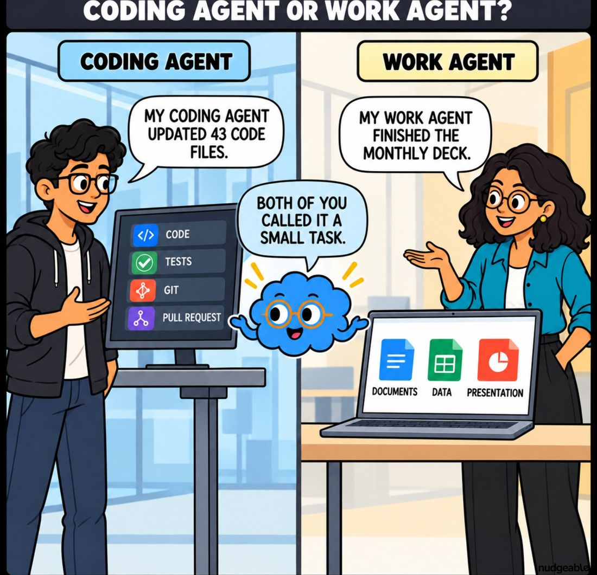

What is a
work agent?
Ordinary chat answers one question at a time and hands the work back to you. A work agent takes the whole task, opens the files itself, does the steps in order and saves the result where you asked. You describe the outcome instead of managing the steps.
The same request, walked through step by step. Tap each stage to see where the time goes.
You ask for the finished thing
A normal chat is built as a conversation. One message from you, one reply back, and then it waits. That design is exactly right for questions and exactly wrong for jobs with eight steps in them.
So the work splits in an awkward way. The AI does the thinking, and you do the carrying. You attach the next file, you paste the last answer into the next question, you remember which of the four files has already been done.
The cost is not the minutes. It is that you cannot start anything else, because the job only moves while you are sitting there moving it.
You point it at a folder, describe the outcome, and leave. It opens the files, does the steps in order and saves the result back where the work belongs.

One instruction, the whole job. Read the files in this folder, analyse them, build the deck and save it here. No file attaching, no pasting between steps, no waiting to be asked what comes next.

The result lands where the work already is. Nothing to upload, nothing to download, and no second copy of the file drifting out of date in a downloads folder.
The instinct from ordinary chat is to break the job into small pieces and feed them in one at a time. That instruction style holds a work agent back. Say what finished looks like and where it should end up, then let it work out the order.
Four things separate a work agent from the same AI in a chat window. Only one of them is the model.

The model is the smallest part of it. What makes the difference is having tools to use, somewhere real to work, permission to act and a loop that keeps going until the job is done.

The boundary is the feature. You can work in this folder and nowhere else. That sentence is what makes handing over the job reasonable rather than reckless.
Tools
It can open a file, write one, run a calculation, search the web, and use the apps you have connected.
Somewhere real to work
A folder of your actual files, rather than whatever you remembered to attach.
Permission
An explicit grant covering which folders it may touch, and what it may do there.
A loop that keeps going
It does a step, looks at what came back, decides the next step and carries on until the job is finished.
Two versions of the same idea, and the difference is what it can reach. Worth checking which one you are using before you ask for anything.

On your laptop. It works inside folders you have approved, on the real files, and saves the result straight back into the same folder.

In the cloud. It works with what you upload, what it can reach on the web, and the services you have connected. It cannot see your laptop folder unless the tool offers a connection and you switch it on.
That is the real trade. Work running in the cloud carries on while you are in a meeting or asleep, and you can pick the same task up from your phone. Work running on your laptop reaches your actual files but needs the app open and the machine awake.
If you had to approve a folder, it is on your laptop. The giveaway is that it names files you never uploaded and saves results where you can find them in your file browser.
If you had to upload or connect something, it is in the cloud. It will ask you to attach a file, or to link an account, because it has no other way to reach your material.
Several tools now do both in the same product, and the answer can change from one task to the next. When it matters, ask it where it is going to save the result before you start.
A work agent does what you said, at speed, without stopping to wonder whether you meant it. That is the whole benefit and the whole risk.

Say what it may not touch, out loud. Use these files, build the deck, save it here, and do not delete or overwrite any of the originals. The last clause is the one people leave out.

It checks because you told it to. A file with that name already exists. It asks rather than assumes, because the brief covered this case before it came up.

The work is done and the original survived. Not luck, and not the tool being careful on your behalf. It is one sentence you wrote at the start.
Access is granted folder by folder, and inside an approved folder it can read, write and in some tools permanently delete. Make a folder for the task, put copies in it, and point the agent at that. Keep financial records, passwords and anything you cannot replace outside it.
Most tools let you choose how often it checks with you. Move it to approving each step when any of these are true.
The point of a work agent is that you leave. Five things make that comfortable.
Read what it produced before you send it on. A work agent finishing a job is not the same as a job being right, and you are still the person whose name is on it.
The first one is the mix-up that comes up in every conversation about this.

Same idea, two different jobs. A coding agent works on software: code files, tests, version history. A work agent works on the documents, data and decks that fill an ordinary week. Both will tell you it was a small task.
"A work agent and a coding agent are the same thing with different branding."
Tap to flipThey share the idea and almost nothing else. A coding agent is built for software projects and expects someone who can read code. A work agent is built for documents, spreadsheets and decks, and expects someone who cannot.
Tap to flip back"If I give it a folder, it will be careful with what is in there."
Tap to flipInside a folder you approved it can read, write and in some tools permanently delete. Careful is a thing you write into the brief, not a setting that is on by default. Point it at copies.
Tap to flip back"It finished, so the job is done."
Tap to flipFinished means it stopped, not that it was right. It can work confidently from the wrong file for twenty minutes. Reading the output is still your job, and it is a much smaller job than doing the work.
Tap to flip backEvery major tool has added a version of this, and they reach different things. Each name links to the official page.
| Tool | Called | What it reaches | Worth knowing |
|---|---|---|---|
| Claude | Cowork | Folders you approve on your own machine, plus the web and connected services. Built for documents, data and decks rather than code. | Runs in the cloud, so it carries on after you close the laptop. You choose how often it checks with you, and it asks before deleting anything. |
| ChatGPT | Agent | The web, and apps you connect. It works through websites the way a person would, filling forms and clicking through. | Hands control back to you for logins, and asks before anything with real consequences. Monthly limits on how many tasks you can start. |
| Google Gemini | Gemini in Drive | Your files in Google Drive, and the rest of Workspace. | More cautious by design. For file organising it suggests the moves and waits for you to approve them rather than acting on its own. |
| Microsoft Copilot | Agent Mode | The document, workbook or deck you have open, and your organisation's Microsoft files. | Works inside the file itself rather than in a side panel. Usually switched on by your admin. |
These started as a way to stop attaching files one at a time. They are turning into something you hand a whole task to and check on later, which changes what a working day looks like more than any feature before it. The part still being worked out is how much to let one run without a person watching, and every tool is answering that differently. Correct as of September 2026.